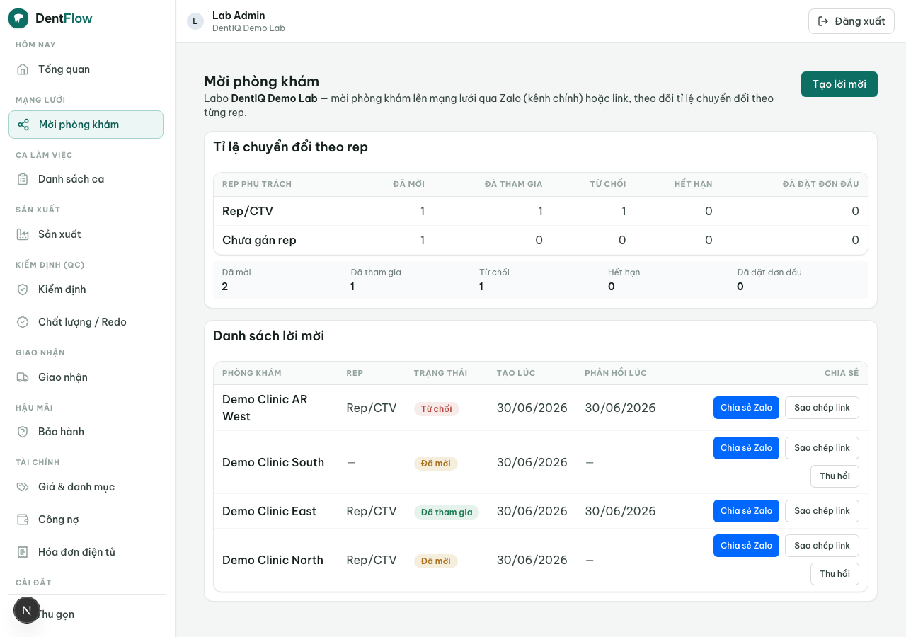

Labo lên hệ thống (go-live)
Đưa một labo mới từ con số không lên chạy thật trên DentIQ Lab đi qua ba nhịp: cấu hình (vật liệu, bảng giá, vai trò), mời tập phòng khám quen của mình, rồi chạy thật những đơn đầu tiên. Đây là luồng tăng trưởng theo quan hệ — biến mỗi mối quan hệ ngoài đời (Zalo, điện thoại) thành một cạnh sống trong mạng lưới, từng quan hệ một. Không viral: thắng bằng kỷ luật mời qua rep/CTV, UX không ma sát và hâm nóng đúng lúc.

invited sang active khi đơn đầu về; mỗi cạnh ghi rep/CTV nguồn để quy công kích hoạt.Bối cảnh
Một labo vừa trả tiền SaaS và có sẵn một tập phòng khám quen — quan hệ ngoài đời, phần lớn đi qua trình dược viên / CTV (TDV). Chưa có cạnh nào trong mạng lưới. Trước khi mời, labo cần cấu hình xong nền: khai vật liệu + công đoạn, lập bảng giá, và bộ vai trò mặc định đã được seed sẵn. Xong nền, labo tạo QR/link để phòng khám đặt đơn, mời tập phòng khám của mình, và chờ đơn đầu tiên — cột mốc "go-live" thật sự là khi cạnh đầu chuyển sang active.
Diễn viên & quyền cần
| Vai trò | Quyền/điều kiện | Hành động |
|---|---|---|
| Chủ / quản lý labo | Đã trả SaaS; vai quản lý | Cấu hình vật liệu/bảng giá/vai trò; mời tập phòng khám; theo dõi cạnh; hâm nóng cạnh nguội |
| Rep / CTV (TDV) của labo | Nắm quan hệ ngoài đời | Phát lời mời cho chính phòng khám mình phụ trách; được quy công kích hoạt khi đơn đầu về |
| Nha sĩ / lễ tân (clinic) | Nhận lời mời | Tham gia, đặt đơn không cần cài app |
| Hệ thống | — | Suy ra dormant/churned theo ngưỡng ngày không đơn; tính chuyển đổi + mật độ; nhắc hâm nóng |
Quy trình từng bước
- Cấu hình nền. Chạy wizard cấu hình lần đầu: khai vật liệu + công đoạn, lập bảng giá, nhận bộ vai trò mặc định đã seed. Đây là điều kiện để đặt đơn và tính giá chạy đúng.
- Tạo QR / link đặt đơn. Labo sinh QR/link để phòng khám đặt đơn không cần cài app — mặt tiền của kênh không ma sát.
- Mời tập phòng khám. Labo (thường để rep/CTV) phát lời mời qua QR/link/Zalo cho các phòng khám quen. Cạnh chuyển
none → invited, ghi rep/CTV nguồn. - Đơn đầu không ma sát. Phòng khám đặt đơn qua connectionless intake — không cài app, không tài khoản nặng. Đơn đầu đưa cạnh
invited → activevà quy công kích hoạt cho rep/CTV nguồn. - Giữ nhịp + hâm nóng. Đơn đều giữ cạnh
active. Quá N ngày không đơn → hệ thống suy radormant; labo/rep nhắc qua Zalo →reactivated → active; bỏ lâu hơn →churned.
Kết quả mong đợi
- Labo cấu hình xong nền (vật liệu, bảng giá, vai trò) — đặt đơn và tính giá chạy đúng ngay từ đơn đầu.
- Các quan hệ thật trở thành cạnh
activetrong mạng lưới; mật độ cạnh sống tăng từng quan hệ một. - Mỗi cạnh ghi rep/CTV nguồn; đơn đầu (kích hoạt) được quy công đúng cho rep đó.
- Phòng khám đặt đơn được mà không phải cài app hay lập tài khoản nặng.
Khi nào hỏng & cách xử lý
| Triệu chứng | Nguyên nhân | Khắc phục |
|---|---|---|
| Mời nhiều nhưng không lên đơn | Cạnh dừng ở invited, chưa active | Thước đo là mật độ cạnh sống, không phải số lời mời (NG-3); rep hâm nóng qua Zalo đúng lúc, không kỳ vọng viral |
| Phòng khám im lâu, không đặt đơn | Quá N ngày không đơn | Hệ thống suy ra dormant; labo/rep hâm nóng → reactivated → active; bỏ lâu hơn khép lại churned (NG-4) |
| Lời mời không bao giờ nở | Hết hạn mà chưa có đơn nào | Cạnh invited → churned; phát lại lời mời khi quan hệ ấm lên |
| Cùng phòng khám xuất hiện nhiều cạnh | Mời trùng | Không tạo cạnh trùng: một labo ↔ một phòng khám đúng một cạnh (NG-1) |
| Rep/CTV bị bỏ qua khỏi quan hệ | Disintermediate rep | Mỗi cạnh ghi rep nguồn; sự kiện kích hoạt quy công cho rep — đừng thiết kế bỏ qua rep (NG-5) |
| Đơn đầu tính giá sai / thiếu vật liệu | Chưa cấu hình xong nền trước khi mời | Hoàn tất wizard (vật liệu + công đoạn + bảng giá) trước khi phát lời mời |
Đây là kênh tăng trưởng theo quan hệ cho phòng khám không dùng PMS (mời qua QR/Zalo, đặt đơn connectionless). Phòng khám đang dùng DentIQ đi kênh kỹ thuật khác — xem Liên kết phòng khám dùng DentIQ. Vòng tăng trưởng này chậm, từng quan hệ một, không có cấu trúc tự khuếch đại; đừng đo như một sản phẩm viral.